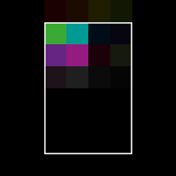
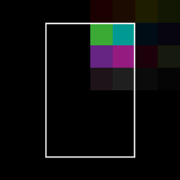
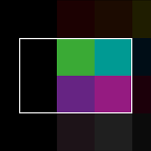

TextureCanvas
Introduction
The TextureCanvas is a utility class allowing dynamic creation of textures at runtime. Acting as a wrapper around the Texture class, it provides a simpler API for simple texture manipulation.
Motivation
Stride is a very versatile and powerful engine which uses textures for a lot of data processing. Sometimes it is necessary to create these textures on the fly for example for simple tasks like scaling, applying image effects or to build new textures based on existing ones (texture atlas).
TextureCanvas
The TextureCanvas abstracts away a lot of complexity behind custom buffers, textures, memory allocation and instead provides you with a simpler builder API to define your texture dynamically.
var renderContext = RenderContext.GetShared(game.Services);
using var canvas = new TextureCanvas(renderContext);
Note
Notice the using at the front. This part is crucial as you should always dispose of your texture canvas when it's no longer needed. The canvas utilizes multiple image buffers behind the scenes, and failing to dispose of it prevents the release of these resources, which can lead to memory leaks.
Initialization
Most operations start with a single texture as a source so we need to load the texture first using the traditional texture api.
var directory = Path.GetDirectoryName(Assembly.GetEntryAssembly()!.Location)!;
var filePath = Path.Combine(directory, "input.png");
using var input = File.Open(filePath, FileMode.Open);
var texture = Texture.Load(game.GraphicsDevice, input);
This code loads an input image from the local file system and stores it as a temporary texture
Loading
In case you just want to manipulate a texture directly you can also use the similar api from the TextureCanvas directly.
var directory = Path.GetDirectoryName(Assembly.GetEntryAssembly()!.Location)!;
var filePath = Path.Combine(directory, "input.png");
canvas.Load(filePath)
This would load the same texture directly as a buffer for further processing. Similar methods also exist for file streams or data buffers accordingly.
Storing
To get the resulting image you have the option to save the image to a file, stream or array depending on your requirements.
var directory = Path.GetDirectoryName(Assembly.GetEntryAssembly()!.Location)!;
var filePath = Path.Combine(directory, "input.png");
using var output = File.Open(filePath, FileMode.Open);
canvas.Store(output, ImageFileType.Png);
The most common approach however would be to get the result as a texture you can use for your UI or Materials.
var output = canvas.ToTexture();
Note
Notice that you shouldn't use these methods every frame as it involves GPU < - > CPU transfers which can block your game.
Manipulation
The TextureCanvas supports various image manipulations as well as image effects.
Resample
The Resample method changes the current size of the texture or pixel format while preserving the current content. The content will be resized to match the new size if neccesary.
canvas.Resample(size: new Size2(512, 512), pixelFormat: PixelFormat.R8G8B8A8_UNorm)
BrightFilter
The BrightFilter method a BrightFilter filter to the image
canvas.BrightFilter(threshold: 0.2f, steepness: 1.0f)
GaussianBlur
The GaussianBlur method applies a GaussianBlur effect to the image
canvas.GaussianBlur(radius: 4, sigmaRatio: 2.0f)
CoCMapBlur
The CoCMapBlur method applies a CoCMapBlur effect to the image
canvas.CoCMapBlur(radius: 4)
Transform
The Transform method applies a ColorTransformGroup effect to the image
canvas.Transform(transforms: new[] { new LuminanceToChannelTransform{ ColorChannel = ColorChannel.R } })
Combine
The Combine method applies a ColorCombiner effect to the image
canvas.Combine(
textures: new [] { sourceTexture1, sourceTexture2, null /* = Canvas Content */ },
factors: new [] { .2f, .2f, .6f }
);
Colorize
The Colorize method multiplies the current canvas content by a color to create a modulated image.
canvas.Colorize(colorMultiplier: new Color4(1f, 0, 0));
Recolorize
The Recolorize method works the same way as colorize but only uses the red-channel as an input. The color multiplier is optional, omitting it would change the image to a gray-scale image.
canvas.Recolorize(colorMultiplier: new Color4(1f, 0, 0));
Apply
The Apply method applies a custom ImageEffect to the image
using var effect = new GaussianBlur();
canvas.Apply(effect);
Drawing
Sometimes you also want to customize which parts of a source texture is applied to which part of the canvas. You can also compose multiple texture into a single one using these methods.
Stretch
This enum controls the stretch mode when resampling the source rect to the target rect
- None: The texture preserves its original size. Overflowing content is cropped.
- Stretch: The texture is resized to fill the destination dimensions. The aspect ratio is not preserved.
- Contain: The texture is resized to fit in the destination dimensions while it preserves its native aspect ratio.
- Cover: The texture is resized to fill the destination dimensions while it preserves its native aspect ratio. If the aspect ratio of the destination rectangle differs from the source, the source texture is clipped to fit in the destination dimensions.
Anchors
This enum controls the alignment mode if clipping or padding is necessary. How the anchors behave is dependant on the selected stretch mode.
- TopLeft: Adjust the position so the top-left corner of the source and target rect are aligned.
- Top: Adjust the position so the top-edge center of the source and target rect are aligned.
- TopRight: Adjust the position so the top-right corner of the source and target rect are aligned.
- Left: Adjust the position so the left-edge center of the source and target rect are aligned.
- Center: Adjust the position so the center of the source and target rect are aligned.
- Right: Adjust the position so the right-edge center of the source and target rect are aligned.
- BottomLeft: Adjust the position so the bottom-left corner of the source and target rect are aligned.
- Bottom: Adjust the position so the bottom-edge center of the source and target rect are aligned.
- BottomRight: Adjust the position so the bottom-right corner of the source and target rect are aligned.
Draw
There are many overloads to the draw method but all of them follow this basic structure.
canvas.DrawTexture(
texture,
[SourceRect],
[TargetRect],
[ColorMultiplier],
[Stretch],
[Anchor],
[SamplingPattern]
);
Note
Notice the options for stretch and anchors these control how the texture is converted from the source rectangle to the target one.
Examples
| Stretch | Anchor | Source Rect | Target Rect | Result |
|---|---|---|---|---|
| None | TopLeft |  |
 |
 |
| None | Top | |
|
 |
| None | TopRight | |
|
 |
| None | Left | |
|
 |
| None | Center | |
|
 |
| None | Right | |
|
 |
| None | BottomLeft | |
|
 |
| None | Bottom | |
|
 |
| None | BottomRight | |
|
 |
| Stretch | Any | |
|
 |
| Stretch | Any | |
 |
|
| Contain | AnyLeft | |
 |
|
| Contain | AnyRight | |
 | |
| Contain | AnyTop | |
|
 |
| Contain | AnyBottom | |
|
 |
| Contain | AnyCenter | |
 |
 |
| Cover | AnyLeft | |
|
 |
| Cover | AnyRight | |
|
 |
| Cover | AnyTop | |
 |
|
| Cover | AnyBottom | |
 |
|
| Cover | AnyCenter | |
|
 |
View on GitHub.
using Stride.CommunityToolkit.Engine;
using Stride.CommunityToolkit.Extensions;
using Stride.CommunityToolkit.Rendering.Utilities;
using Stride.Core.Mathematics;
using Stride.Engine;
using Stride.Graphics;
using Stride.Rendering.Images;
using Stride.Rendering.Sprites;
using Stride.UI;
using Stride.UI.Controls;
using Stride.UI.Panels;
using System.Reflection;
using var game = new Game();
game.Run(start: Start);
static void Start(Game game)
{
game.Window.SetSize(new Int2(1000, 1080));
game.SetupBase();
var directory = Path.GetDirectoryName(Assembly.GetEntryAssembly()!.Location)!;
var filePath = Path.Combine(directory, "input.png");
using var input = File.Open(filePath, FileMode.Open);
var texture = Texture.Load(game.GraphicsDevice, input);
var grid = new UniformGrid
{
Width = 1000,
Height = 1000,
Columns = 9,
Rows = 9,
Margin = new Thickness(8, 8, 8, 8)
};
grid.Children.Add(CreateCard(texture));
for (var a = 0; a < 9; a++)
{
var anchor = (TextureCanvas.Anchor)a;
for (var s = 0; s < 4; s++)
{
var stretch = (TextureCanvas.Stretch)s;
using (var canvas = game.CreateTextureCanvas(new Size2(1024, 1024)))
{
canvas.DrawTexture(texture, new Rectangle(0, 128, 256, 256), new Rectangle(128, 256, 768, 512), null, stretch, anchor, SamplingPattern.Expanded);
var card = CreateCard(canvas.ToTexture());
card.SetGridColumn(a);
card.SetGridRow(s * 2 + 1);
grid.Children.Add(card);
}
using (var canvas = game.CreateTextureCanvas(new Size2(1024, 1024)))
{
canvas.DrawTexture(texture, new Rectangle(0, 128, 256, 256), new Rectangle(256, 128, 512, 768), null, stretch, anchor);
var card = CreateCard(canvas.ToTexture());
card.SetGridColumn(a);
card.SetGridRow(s * 2 + 2);
grid.Children.Add(card);
}
}
}
var entity = new Entity { Scene = game.SceneSystem.SceneInstance.RootScene };
entity.Add(new UIComponent { Page = new UIPage { RootElement = grid } });
}
static Border CreateCard(Texture texture)
{
var card = new Border
{
BorderColor = new Color(25, 25, 25),
BackgroundColor = new Color(120, 120, 120),
BorderThickness = new Thickness(2, 2, 2, 2),
Padding = new Thickness(8, 8, 8, 8),
Margin = new Thickness(4, 4, 4, 4),
Content = new StackPanel
{
Orientation = Orientation.Vertical,
Children =
{
new ImageElement
{
Source = new SpriteFromTexture { Texture = texture }
}
}
}
};
return card;
}